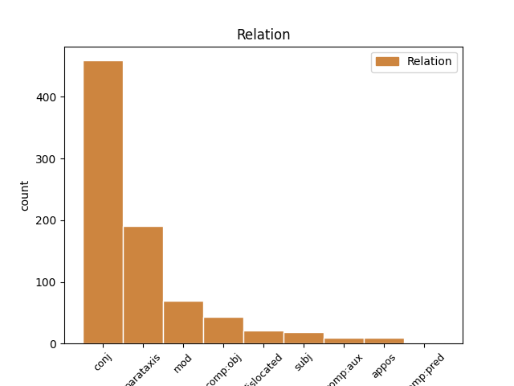
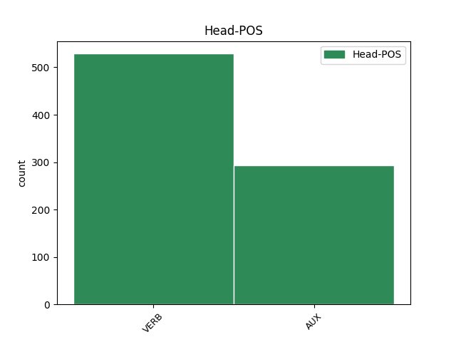
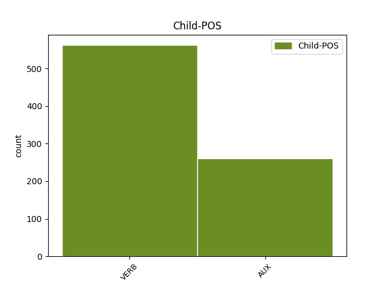

Distribution of features within this leaf



Agreement Rules sorted by frequency.
- When the dependent token is the conjunct(conj) of the head token,
1 Även _ _ _ _ 0 _ _ _
2 den _ _ _ _ 0 _ _ _
3 förälder _ _ _ _ 0 _ _ _
4 som _ _ _ _ 0 _ _ _
5 väljer _ _ _ _ 0 _ _ _
6 att _ _ _ _ 0 _ _ _
7 stanna _ _ _ _ 0 _ _ _
8 hemma _ _ _ _ 0 _ _ _
9 under _ _ _ _ 0 _ _ _
10 barnens _ _ _ _ 0 _ _ _
11 första _ _ _ _ 0 _ _ _
12 år _ _ _ _ 0 _ _ _
13 har ha VERB VB|PRS|AKT Mood=Ind|Tense=Pres|VerbForm=Fin|Voice=Act 0 _ _ _
14 ett _ _ _ _ 0 _ _ _
15 legitimt _ _ _ _ 0 _ _ _
16 behov _ _ _ _ 0 _ _ _
17 av _ _ _ _ 0 _ _ _
18 att _ _ _ _ 0 _ _ _
19 då _ _ _ _ 0 _ _ _
20 och _ _ _ _ 0 _ _ _
21 då _ _ _ _ 0 _ _ _
22 få _ _ _ _ 0 _ _ _
23 avkoppling _ _ _ _ 0 _ _ _
24 från _ _ _ _ 0 _ _ _
25 barnen _ _ _ _ 0 _ _ _
26 och _ _ _ _ 0 _ _ _
27 borde böra AUX VB|PRT|AKT Mood=Ind|Tense=Past|VerbForm=Fin|Voice=Act 13 conj _ _
28 inte _ _ _ _ 0 _ _ _
29 behöva _ _ _ _ 0 _ _ _
30 släpa _ _ _ _ 0 _ _ _
31 med _ _ _ _ 0 _ _ _
32 sig _ _ _ _ 0 _ _ _
33 barnen _ _ _ _ 0 _ _ _
34 till _ _ _ _ 0 _ _ _
35 tandläkare _ _ _ _ 0 _ _ _
36 , _ _ _ _ 0 _ _ _
37 hårfrisörska _ _ _ _ 0 _ _ _
38 etc _ _ _ _ 0 _ _ _
39 . _ _ _ _ 0 _ _ _
1 Det _ _ _ _ 0 _ _ _
2 visade visa VERB VB|PRT|AKT Mood=Ind|Tense=Past|VerbForm=Fin|Voice=Act 0 _ _ _
3 sig _ _ _ _ 0 _ _ _
4 att _ _ _ _ 0 _ _ _
5 dessa _ _ _ _ 0 _ _ _
6 barn _ _ _ _ 0 _ _ _
7 kom _ _ _ _ 0 _ _ _
8 att _ _ _ _ 0 _ _ _
9 sakna _ _ _ _ 0 _ _ _
10 förmåga _ _ _ _ 0 _ _ _
11 till _ _ _ _ 0 _ _ _
12 verklig _ _ _ _ 0 _ _ _
13 känsloanknytning _ _ _ _ 0 _ _ _
14 , _ _ _ _ 0 _ _ _
15 de _ _ _ _ 0 _ _ _
16 blev bli VERB VB|PRT|AKT Mood=Ind|Tense=Past|VerbForm=Fin|Voice=Act 2 parataxis _ _
17 oförmögna _ _ _ _ 0 _ _ _
18 till _ _ _ _ 0 _ _ _
19 inlevelse _ _ _ _ 0 _ _ _
20 i _ _ _ _ 0 _ _ _
21 andra _ _ _ _ 0 _ _ _
22 människor _ _ _ _ 0 _ _ _
23 , _ _ _ _ 0 _ _ _
24 till _ _ _ _ 0 _ _ _
25 att _ _ _ _ 0 _ _ _
26 verkligen _ _ _ _ 0 _ _ _
27 tycka _ _ _ _ 0 _ _ _
28 om _ _ _ _ 0 _ _ _
29 någon _ _ _ _ 0 _ _ _
30 . _ _ _ _ 0 _ _ _
1 Ser _ _ _ _ 0 _ _ _
2 man _ _ _ _ 0 _ _ _
3 nu _ _ _ _ 0 _ _ _
4 till _ _ _ _ 0 _ _ _
5 föräldrarnas _ _ _ _ 0 _ _ _
6 behov _ _ _ _ 0 _ _ _
7 så _ _ _ _ 0 _ _ _
8 behöver behöva AUX VB|PRS|AKT Mood=Ind|Tense=Pres|VerbForm=Fin|Voice=Act 0 _ _ _
9 det _ _ _ _ 0 _ _ _
10 inte _ _ _ _ 0 _ _ _
11 råda _ _ _ _ 0 _ _ _
12 något _ _ _ _ 0 _ _ _
13 motsatsförhållande _ _ _ _ 0 _ _ _
14 där _ _ _ _ 0 _ _ _
15 , _ _ _ _ 0 _ _ _
16 vilken _ _ _ _ 0 _ _ _
17 väg _ _ _ _ 0 _ _ _
18 de _ _ _ _ 0 _ _ _
19 än _ _ _ _ 0 _ _ _
20 väljer välja VERB VB|PRS|AKT Mood=Ind|Tense=Pres|VerbForm=Fin|Voice=Act 8 mod _ SpaceAfter=No
21 , _ _ _ _ 0 _ _ _
22 om _ _ _ _ 0 _ _ _
23 samhället _ _ _ _ 0 _ _ _
24 skapar _ _ _ _ 0 _ _ _
25 former _ _ _ _ 0 _ _ _
26 för _ _ _ _ 0 _ _ _
27 att _ _ _ _ 0 _ _ _
28 ta _ _ _ _ 0 _ _ _
29 hand _ _ _ _ 0 _ _ _
30 om _ _ _ _ 0 _ _ _
31 barnen _ _ _ _ 0 _ _ _
32 som _ _ _ _ 0 _ _ _
33 är _ _ _ _ 0 _ _ _
34 friare _ _ _ _ 0 _ _ _
35 och _ _ _ _ 0 _ _ _
36 smidigare _ _ _ _ 0 _ _ _
37 än _ _ _ _ 0 _ _ _
38 de _ _ _ _ 0 _ _ _
39 vi _ _ _ _ 0 _ _ _
40 nu _ _ _ _ 0 _ _ _
41 har _ _ _ _ 0 _ _ _
42 . _ _ _ _ 0 _ _ _
1 Frågar fråga VERB VB|PRS|AKT Mood=Ind|Tense=Pres|VerbForm=Fin|Voice=Act 0 _ _ _
2 man _ _ _ _ 0 _ _ _
3 sedan _ _ _ _ 0 _ _ _
4 , _ _ _ _ 0 _ _ _
5 vilket _ _ _ _ 0 _ _ _
6 djupare _ _ _ _ 0 _ _ _
7 syfte _ _ _ _ 0 _ _ _
8 som _ _ _ _ 0 _ _ _
9 äktenskapet _ _ _ _ 0 _ _ _
10 kan kunna AUX VB|PRS|AKT Mood=Ind|Tense=Pres|VerbForm=Fin|Voice=Act 1 comp:obj _ _
11 få _ _ _ _ 0 _ _ _
12 för _ _ _ _ 0 _ _ _
13 den _ _ _ _ 0 _ _ _
14 , _ _ _ _ 0 _ _ _
15 som _ _ _ _ 0 _ _ _
16 lever _ _ _ _ 0 _ _ _
17 i _ _ _ _ 0 _ _ _
18 Kristi _ _ _ _ 0 _ _ _
19 tro _ _ _ _ 0 _ _ _
20 , _ _ _ _ 0 _ _ _
21 blir _ _ _ _ 0 _ _ _
22 svaret _ _ _ _ 0 _ _ _
23 : _ _ _ _ 0 _ _ _
24 att _ _ _ _ 0 _ _ _
25 på _ _ _ _ 0 _ _ _
26 äktenskapets _ _ _ _ 0 _ _ _
27 begränsade _ _ _ _ 0 _ _ _
28 område _ _ _ _ 0 _ _ _
29 söka _ _ _ _ 0 _ _ _
30 leva _ _ _ _ 0 _ _ _
31 ut _ _ _ _ 0 _ _ _
32 något _ _ _ _ 0 _ _ _
33 av _ _ _ _ 0 _ _ _
34 Kristi _ _ _ _ 0 _ _ _
35 kärlek _ _ _ _ 0 _ _ _
36 gentemot _ _ _ _ 0 _ _ _
37 den _ _ _ _ 0 _ _ _
38 andra _ _ _ _ 0 _ _ _
39 parten _ _ _ _ 0 _ _ _
40 i _ _ _ _ 0 _ _ _
41 äktenskapet _ _ _ _ 0 _ _ _
42 . _ _ _ _ 0 _ _ _
1 Ser se VERB VB|PRS|AKT Mood=Ind|Tense=Pres|VerbForm=Fin|Voice=Act 8 dislocated _ _
2 man _ _ _ _ 0 _ _ _
3 nu _ _ _ _ 0 _ _ _
4 till _ _ _ _ 0 _ _ _
5 föräldrarnas _ _ _ _ 0 _ _ _
6 behov _ _ _ _ 0 _ _ _
7 så _ _ _ _ 0 _ _ _
8 behöver behöva AUX VB|PRS|AKT Mood=Ind|Tense=Pres|VerbForm=Fin|Voice=Act 0 _ _ _
9 det _ _ _ _ 0 _ _ _
10 inte _ _ _ _ 0 _ _ _
11 råda _ _ _ _ 0 _ _ _
12 något _ _ _ _ 0 _ _ _
13 motsatsförhållande _ _ _ _ 0 _ _ _
14 där _ _ _ _ 0 _ _ _
15 , _ _ _ _ 0 _ _ _
16 vilken _ _ _ _ 0 _ _ _
17 väg _ _ _ _ 0 _ _ _
18 de _ _ _ _ 0 _ _ _
19 än _ _ _ _ 0 _ _ _
20 väljer _ _ _ _ 0 _ _ _
21 , _ _ _ _ 0 _ _ _
22 om _ _ _ _ 0 _ _ _
23 samhället _ _ _ _ 0 _ _ _
24 skapar _ _ _ _ 0 _ _ _
25 former _ _ _ _ 0 _ _ _
26 för _ _ _ _ 0 _ _ _
27 att _ _ _ _ 0 _ _ _
28 ta _ _ _ _ 0 _ _ _
29 hand _ _ _ _ 0 _ _ _
30 om _ _ _ _ 0 _ _ _
31 barnen _ _ _ _ 0 _ _ _
32 som _ _ _ _ 0 _ _ _
33 är _ _ _ _ 0 _ _ _
34 friare _ _ _ _ 0 _ _ _
35 och _ _ _ _ 0 _ _ _
36 smidigare _ _ _ _ 0 _ _ _
37 än _ _ _ _ 0 _ _ _
38 de _ _ _ _ 0 _ _ _
39 vi _ _ _ _ 0 _ _ _
40 nu _ _ _ _ 0 _ _ _
41 har _ _ _ _ 0 _ _ _
42 . _ _ _ _ 0 _ _ _
1 Hur _ _ _ _ 0 _ _ _
2 man _ _ _ _ 0 _ _ _
3 uppfattar uppfatta VERB VB|PRS|AKT Mood=Ind|Tense=Pres|VerbForm=Fin|Voice=Act 13 subj _ _
4 ett _ _ _ _ 0 _ _ _
5 sådant _ _ _ _ 0 _ _ _
6 löfte _ _ _ _ 0 _ _ _
7 och _ _ _ _ 0 _ _ _
8 vad _ _ _ _ 0 _ _ _
9 man _ _ _ _ 0 _ _ _
10 menar _ _ _ _ 0 _ _ _
11 med _ _ _ _ 0 _ _ _
12 det _ _ _ _ 0 _ _ _
13 beror bero VERB VB|PRS|AKT Mood=Ind|Tense=Pres|VerbForm=Fin|Voice=Act 0 _ _ _
14 förstås _ _ _ _ 0 _ _ _
15 på _ _ _ _ 0 _ _ _
16 personligheten _ _ _ _ 0 _ _ _
17 , _ _ _ _ 0 _ _ _
18 värderingarna _ _ _ _ 0 _ _ _
19 , _ _ _ _ 0 _ _ _
20 attityden _ _ _ _ 0 _ _ _
21 till _ _ _ _ 0 _ _ _
22 motgångar _ _ _ _ 0 _ _ _
23 , _ _ _ _ 0 _ _ _
24 motpartens _ _ _ _ 0 _ _ _
25 inställning _ _ _ _ 0 _ _ _
26 , _ _ _ _ 0 _ _ _
27 beredskapen _ _ _ _ 0 _ _ _
28 till _ _ _ _ 0 _ _ _
29 offer _ _ _ _ 0 _ _ _
30 osv _ _ _ _ 0 _ _ _
31 . _ _ _ _ 0 _ _ _
1 Här _ _ _ _ 0 _ _ _
2 bör böra AUX VB|PRS|AKT Mood=Ind|Tense=Pres|VerbForm=Fin|Voice=Act 0 _ _ _
3 alltså _ _ _ _ 0 _ _ _
4 rent _ _ _ _ 0 _ _ _
5 terminologiskt _ _ _ _ 0 _ _ _
6 gränsen _ _ _ _ 0 _ _ _
7 dras dra VERB VB|PRS|SFO Mood=Ind|Tense=Pres|VerbForm=Fin|Voice=Pass 2 comp:aux _ _
8 mellan _ _ _ _ 0 _ _ _
9 föräktenskapliga _ _ _ _ 0 _ _ _
10 och _ _ _ _ 0 _ _ _
11 äktenskapliga _ _ _ _ 0 _ _ _
12 förbindelser _ _ _ _ 0 _ _ _
13 . _ _ _ _ 0 _ _ _
1 Det _ _ _ _ 0 _ _ _
2 här _ _ _ _ 0 _ _ _
3 har ha VERB VB|PRS|AKT Mood=Ind|Tense=Pres|VerbForm=Fin|Voice=Act 0 _ _ _
4 uppenbara _ _ _ _ 0 _ _ _
5 konsekvenser _ _ _ _ 0 _ _ _
6 t.ex. _ _ _ _ 0 _ _ _
7 för _ _ _ _ 0 _ _ _
8 skolans _ _ _ _ 0 _ _ _
9 etiska _ _ _ _ 0 _ _ _
10 fostran _ _ _ _ 0 _ _ _
11 , _ _ _ _ 0 _ _ _
12 vilket _ _ _ _ 0 _ _ _
13 vi _ _ _ _ 0 _ _ _
14 skall skola AUX VB|PRS|AKT Mood=Ind|Tense=Pres|VerbForm=Fin|Voice=Act 3 appos _ _
15 diskutera _ _ _ _ 0 _ _ _
16 senare _ _ _ _ 0 _ _ _
17 . _ _ _ _ 0 _ _ _
1 Romantiken _ _ _ _ 0 _ _ _
2 under _ _ _ _ 0 _ _ _
3 1800-talets _ _ _ _ 0 _ _ _
4 förra _ _ _ _ 0 _ _ _
5 hälft _ _ _ _ 0 _ _ _
6 ' _ _ _ _ 0 _ _ _
7 upptäckte upptäcka VERB VB|PRT|AKT Mood=Ind|Tense=Past|VerbForm=Fin|Voice=Act 0 _ _ _
8 ' _ _ _ _ 0 _ _ _
9 - _ _ _ _ 0 _ _ _
10 det _ _ _ _ 0 _ _ _
11 är vara AUX VB|PRS|AKT Mood=Ind|Tense=Pres|VerbForm=Fin|Voice=Act 7 comp:pred _ _
12 inte _ _ _ _ 0 _ _ _
13 bara _ _ _ _ 0 _ _ _
14 ett _ _ _ _ 0 _ _ _
15 skämt _ _ _ _ 0 _ _ _
16 utan _ _ _ _ 0 _ _ _
17 ett _ _ _ _ 0 _ _ _
18 konstaterande _ _ _ _ 0 _ _ _
19 av _ _ _ _ 0 _ _ _
20 faktum _ _ _ _ 0 _ _ _
21 - _ _ _ _ 0 _ _ _
22 kärlekens _ _ _ _ 0 _ _ _
23 plats _ _ _ _ 0 _ _ _
24 i _ _ _ _ 0 _ _ _
25 äktenskapet _ _ _ _ 0 _ _ _
26 . _ _ _ _ 0 _ _ _
Disagree Examples:
1 I _ _ _ _ 0 _ _ _
2 sådant _ _ _ _ 0 _ _ _
3 fall _ _ _ _ 0 _ _ _
4 har ha VERB VB|PRS|AKT Mood=Ind|Tense=Pres|VerbForm=Fin|Voice=Act 0 _ _ _
5 dock _ _ _ _ 0 _ _ _
6 den _ _ _ _ 0 _ _ _
7 andra _ _ _ _ 0 _ _ _
8 maken _ _ _ _ 0 _ _ _
9 rätt _ _ _ _ 0 _ _ _
10 till _ _ _ _ 0 _ _ _
11 skattereduktion _ _ _ _ 0 _ _ _
12 ( _ _ _ _ 0 _ _ _
13 se se VERB VB|IMP|AKT Mood=Imp|VerbForm=Fin|Voice=Act 4 parataxis _ _
14 nedan _ _ _ _ 0 _ _ _
15 ) _ _ _ _ 0 _ _ _
16 . _ _ _ _ 0 _ _ _
1 Men _ _ _ _ 0 _ _ _
2 tro tro VERB VB|IMP|AKT Mood=Imp|VerbForm=Fin|Voice=Act 0 _ _ _
3 inte _ _ _ _ 0 _ _ _
4 du _ _ _ _ 0 _ _ _
5 skall skola AUX VB|PRS|AKT Mood=Ind|Tense=Pres|VerbForm=Fin|Voice=Act 2 comp:obj _ _
6 koppla _ _ _ _ 0 _ _ _
7 av _ _ _ _ 0 _ _ _
8 din _ _ _ _ 0 _ _ _
9 egen _ _ _ _ 0 _ _ _
10 tankeverksamhet _ _ _ _ 0 _ _ _
11 ! _ _ _ _ 0 _ _ _
1 Märker märka VERB VB|PRS|AKT Mood=Ind|Tense=Pres|VerbForm=Fin|Voice=Act 11 dislocated _ _
2 du _ _ _ _ 0 _ _ _
3 att _ _ _ _ 0 _ _ _
4 någon _ _ _ _ 0 _ _ _
5 form _ _ _ _ 0 _ _ _
6 av _ _ _ _ 0 _ _ _
7 översitteri _ _ _ _ 0 _ _ _
8 förekommer _ _ _ _ 0 _ _ _
9 , _ _ _ _ 0 _ _ _
10 så _ _ _ _ 0 _ _ _
11 tala tala VERB VB|IMP|AKT Mood=Imp|VerbForm=Fin|Voice=Act 0 _ _ _
12 med _ _ _ _ 0 _ _ _
13 befälet _ _ _ _ 0 _ _ _
14 . _ _ _ _ 0 _ _ _
1 Skicka skicka VERB VB|IMP|AKT Mood=Imp|VerbForm=Fin|Voice=Act 10 dislocated _ _
2 in _ _ _ _ 0 _ _ _
3 kvittot _ _ _ _ 0 _ _ _
4 eller _ _ _ _ 0 _ _ _
5 lämna _ _ _ _ 0 _ _ _
6 det _ _ _ _ 0 _ _ _
7 på _ _ _ _ 0 _ _ _
8 försäkringskassan _ _ _ _ 0 _ _ _
9 så _ _ _ _ 0 _ _ _
10 får få VERB VB|PRS|AKT Mood=Ind|Tense=Pres|VerbForm=Fin|Voice=Act 0 _ _ _
11 du _ _ _ _ 0 _ _ _
12 den _ _ _ _ 0 _ _ _
13 ersättning _ _ _ _ 0 _ _ _
14 du _ _ _ _ 0 _ _ _
15 har _ _ _ _ 0 _ _ _
16 rätt _ _ _ _ 0 _ _ _
17 till _ _ _ _ 0 _ _ _
18 . _ _ _ _ 0 _ _ _
1 Har ha AUX VB|PRS|AKT Mood=Ind|Tense=Pres|VerbForm=Fin|Voice=Act 22 mod _ _
2 Ni _ _ _ _ 0 _ _ _
3 glömt _ _ _ _ 0 _ _ _
4 att _ _ _ _ 0 _ _ _
5 ta _ _ _ _ 0 _ _ _
6 ett _ _ _ _ 0 _ _ _
7 eller _ _ _ _ 0 _ _ _
8 flera _ _ _ _ 0 _ _ _
9 p-piller _ _ _ _ 0 _ _ _
10 eller _ _ _ _ 0 _ _ _
11 nyligen _ _ _ _ 0 _ _ _
12 slutat _ _ _ _ 0 _ _ _
13 med _ _ _ _ 0 _ _ _
14 sådana _ _ _ _ 0 _ _ _
15 och _ _ _ _ 0 _ _ _
16 tror _ _ _ _ 0 _ _ _
17 att _ _ _ _ 0 _ _ _
18 Ni _ _ _ _ 0 _ _ _
19 är _ _ _ _ 0 _ _ _
20 gravid _ _ _ _ 0 _ _ _
21 , _ _ _ _ 0 _ _ _
22 tänk tänka VERB VB|IMP|AKT Mood=Imp|VerbForm=Fin|Voice=Act 0 _ _ _
23 på _ _ _ _ 0 _ _ _
24 att _ _ _ _ 0 _ _ _
25 urinprovet _ _ _ _ 0 _ _ _
26 blir _ _ _ _ 0 _ _ _
27 tillförlitligt _ _ _ _ 0 _ _ _
28 först _ _ _ _ 0 _ _ _
29 4 _ _ _ _ 0 _ _ _
30 veckor _ _ _ _ 0 _ _ _
31 efter _ _ _ _ 0 _ _ _
32 det _ _ _ _ 0 _ _ _
33 samlag _ _ _ _ 0 _ _ _
34 då _ _ _ _ 0 _ _ _
35 befruktning _ _ _ _ 0 _ _ _
36 kan _ _ _ _ 0 _ _ _
37 ha _ _ _ _ 0 _ _ _
38 ägt _ _ _ _ 0 _ _ _
39 rum _ _ _ _ 0 _ _ _
40 . _ _ _ _ 0 _ _ _